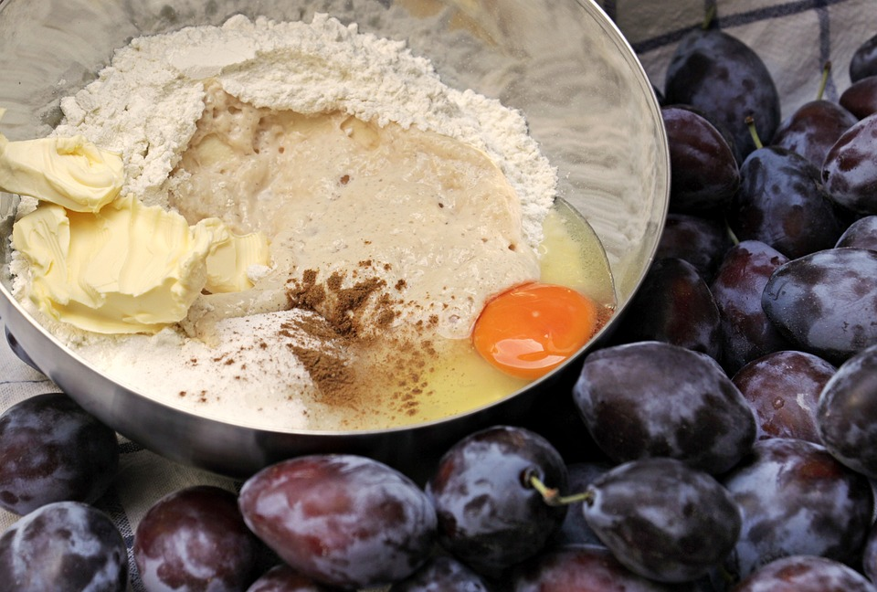
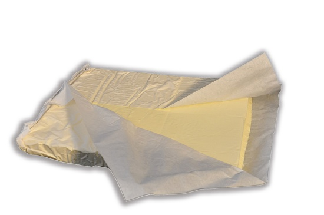
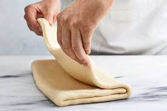
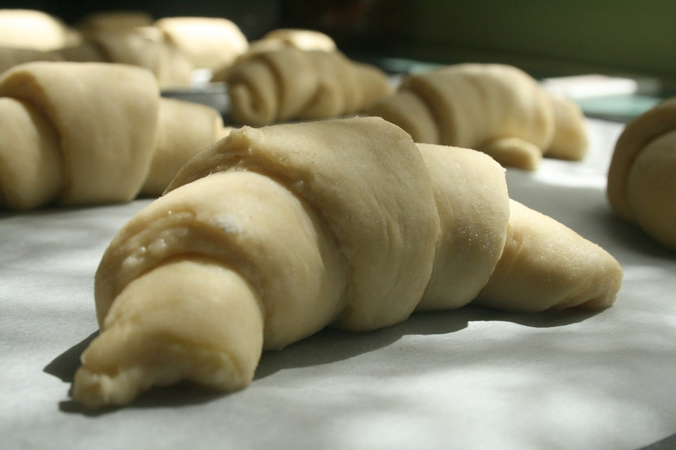
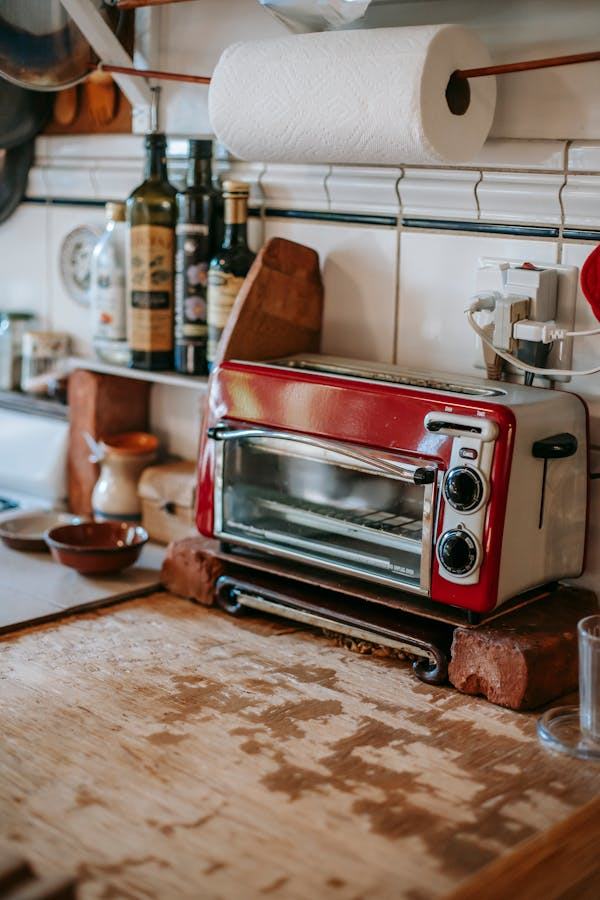
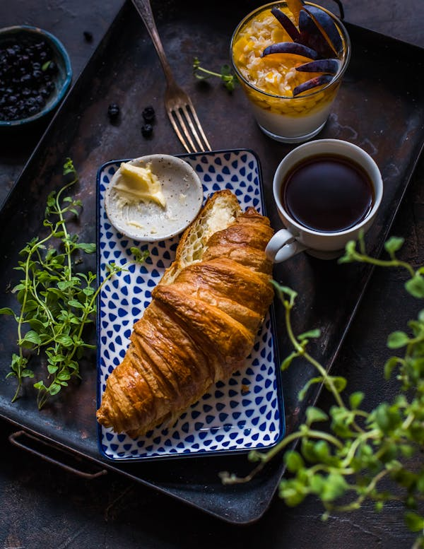

- Preparar la Masa:
En un bol grande, mezcla la harina, la levadura, la sal y el azúcar.
Añade la leche tibia y mezcla hasta formar una masa suave. Si la masa está demasiado pegajosa,
añade
un poco más de harina; si está demasiado seca, añade un poco más de leche.
Amasa la masa durante unos 5-10 minutos hasta que esté suave y elástica.
Deja reposar la masa en un lugar cálido durante aproximadamente 1 hora, o hasta que haya doblado
su
tamaño.

- Preparar la Mantequilla:
Coloca la mantequilla fría entre dos hojas de papel de horno y golpéala con un rodillo
hasta que tenga un grosor uniforme de aproximadamente 1 cm.
Forma un rectángulo con la mantequilla y colócalo en el refrigerador mientras trabajas con la
masa.
se ingresa en la nevera por que la mantequilla natural suele deretirse con facilidad dificultando
la manipulacion , por ello al enfriar se puede utlizar mas facilmente .

- Laminar la Masa:
Una vez que la masa haya doblado su tamaño, extiéndela en una superficie
enharinada hasta formar un rectángulo de aproximadamente 40 x 20 cm.
Coloca el rectángulo de mantequilla en el centro de la masa.
Dobla la masa sobre la mantequilla, cubriéndola por completo.
extiéndela nuevamente hasta formar un rectángulo de aproximadamente 40
x 20 cm.
Dobla la masa en tres partes, como si estuvieras doblando una carta.
Repite este proceso dejando reposar la masa en el
refrigerador durante 30 minutos entre cada doblado.

- Formar los Croissants:
Después del último doblado, extiende la masa en una superficie enharinada hasta que tenga un
grosor de aproximadamente 5 mm.
Corta la masa en triángulos de aproximadamente 10 cm de base y 20 cm de altura.
Haz un pequeño corte en la base de cada triángulo y enrolla la masa desde la base hasta la
punta, formando la forma clásica de croissant.
Coloca los croissants en una bandeja para hornear forrada con papel de horno, con la punta hacia
abajo.

- Segundo Levado y Hornear:
Cúbrelos con un paño húmedo y deja reposar en un lugar cálido durante
aproximadamente 1-2 horas, o hasta que hayan doblado su tamaño.
Precalienta el horno a 200°C (400°F).
Pincela la superficie de los croissants con el huevo batido para darles un acabado dorado.
Hornea los croissants durante 15-20 minutos, o hasta que estén dorados y crujientes.

- Enfriar y Servir:
Saca los croissants del horno y déjalos enfriar en una rejilla antes de servir.
Si se desea se pueden rellenar los croissant , ya sea con queso, bocadillo , arequipe o cualquier dulce de la preferencia ,
incluso se puede espolvorear azúcar glas por encima de estos , lo cual aumentara la dulzura ,
también se puede dejar sin dulce ya que la masa hojaldrada permite que se le de varios sabores a gusto
